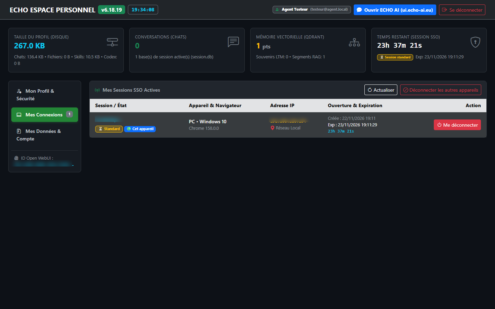
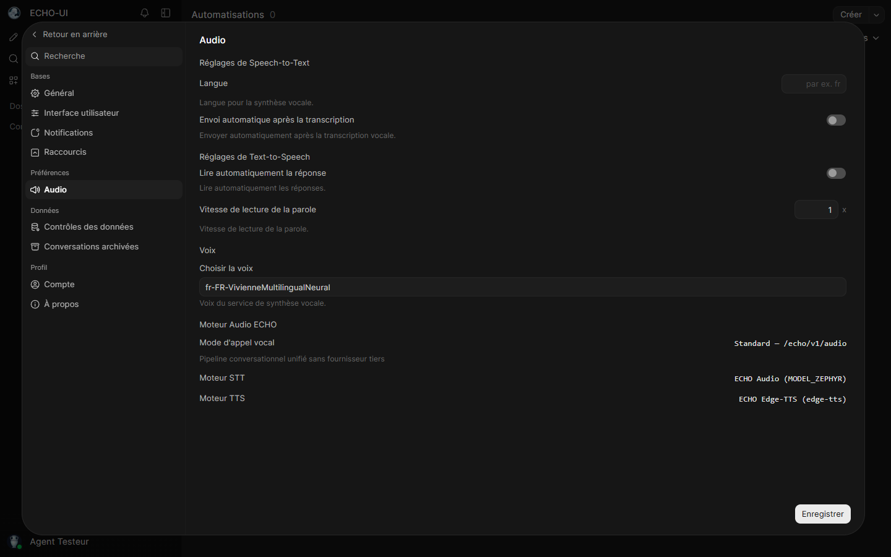

16. Périphériques & Infra
Gouverner les accès, l'espace personnel et les flux multimédias
Autour de l'interface conversationnelle ECHO-UI gravitent des services autonomes chargés de protéger votre connexion, de vous restituer le contrôle total de vos données personnelles, d'administrer la plateforme, de rapatrier les fichiers produits par les agents et de gérer la voix.
1. Authentification unifiée (SSO) & double facteur (MFA)
Lorsque l'exposition publique sécurisée est activée, aucune requête ne parvient à l'interface de conversation ou aux portails de gestion sans avoir été vérifiée au préalable par le bouclier périmétrique et le fournisseur d'identité dédié d'ECHO.
- Enrôlement guidé : Lors de la première connexion, chaque utilisateur choisit son mot de passe personnel, son genre d'adressement (neutre, masculin ou féminin), sa question de récupération et associe son application d'authentification à usage unique (TOTP).
- Gestion du terminal de confiance : Par défaut, une session reste bornée à une durée courte (jusqu'à 24 heures). Sur un poste personnel, l'utilisateur peut cocher explicitement la mention « Ce terminal est de confiance » afin d'accéder à des durées étendues définies par l'administrateur.
- Protection contre les tentatives abusives : Un délai progressif et un verrouillage temporaire ou administratif protègent les comptes contre les essais répétés de mots de passe.
- Déconnexion complète : La fermeture de session révoque le jeton actif côté serveur et vide le cache local du navigateur pour empêcher toute persistance résiduelle sur un poste partagé.
2. Votre Espace Personnel (ECHO User Manager)
Accessible directement depuis l'adresse dédiée my.<votre-domaine>, le portail
ECHO Espace Personnel donne à chaque utilisateur une autonomie complète sur ses données et ses
connexions, sans intervention d'un administrateur.

Portail ECHO Espace Personnel : suivi de l'empreinte disque, des chats, des souvenirs vectoriels et export intégral en archive compressée.
- Visibilité directe : Consultation de l'espace disque occupé, du nombre de conversations actives, du volume d'entrées en mémoire sémantique et du temps restant avant l'expiration de la session courante.
- Export souverain : Génération à la demande d'une archive compressée contenant l'ensemble de vos conversations, bases de session, fichiers et vecteurs mémoriels, suivie en temps réel et supprimée automatiquement après téléchargement ou à l'issue d'un court délai de rétention.
- Suppression autonome : Effacement volontaire de votre compte protégé par double validation (mot de passe et code TOTP), déclenchant le nettoyage complet de vos données lors de la maintenance nocturne.

Onglet Mes Connexions : inventaire des appareils connectés (navigateur, système, type de confiance) et révocation ciblée ou globale.
3. Console d'administration (ECHO Admin Manager)
L'administrateur de l'instance dispose d'un tableau de bord indépendant permettant de superviser la plateforme même si l'interface conversationnelle est en maintenance :
Santé & Utilisateurs
Visualisation de l'état de chaque service, création et gestion des comptes dans le respect du plafond légal de 50 utilisateurs actifs, et paramétrage de la politique de sécurité et de durée des sessions.
Sauvegardes & Externalisation
Création d'archives complètes planifiées ou manuelles, avec transfert sécurisé vers un stockage distant (SFTP ou fournisseurs compatibles Rclone) et restauration guidée.
Maintenance nocturne
Nettoyage coordonné des conversations supprimées, des branches d'historique abandonnées, des fichiers temporaires expirés et consolidation des souvenirs sémantiques anciens.
4. Rapatriement des fichiers et passerelle vocale
Deux services discrets assurent la fluidité des échanges multimédias et documentaires au sein de votre instance :
- Collecte transparente des fichiers : Lorsqu'un workflow d'automatisation, le navigateur autonome ou un connecteur Cloud récupère un document, une zone de dépôt surveillée l'intègre automatiquement dans votre espace de session pour le rendre immédiatement exploitable.
- Passerelle vocale intégrée : La dictée vocale (transcription audio vers texte) et la synthèse vocale (lecture naturelle à voix haute) fonctionnent directement au cœur de l'interface sans service audio externe supplémentaire.

Réglages Audio d'ECHO-UI : sélection de la voix neuronale
(fr-FR-VivienneMultilingualNeural), moteur de synthèse et transcription vocale intégrée.
Dossier d'Ingénierie : Auth Manager, User Manager, Admin Manager, BunkerWeb, Download Broker & Pont Audio
1. Fournisseur d'Identité (24-docker-echo-auth-manager/auth_server.py v6.18.23.1)
- Base & Hachage : FastAPI adossé à
auth.db(SQLite WAL sur volumeecho-auth-data, tablesusersincluantgender TEXT DEFAULT 'X'etsessions). Mots de passe et réponses de sécurité hachés en Argon2id (passlib.hash.argon2) ; MFA TOTP viapyotp. - Politique Dual-Tier & Anti-Bruteforce : Sessions non fiables bornées à
UNTRUSTED_VALID_HOURS = (1, 2, 4, 8, 12, 24); terminaux de confiance explicites bornés àTRUSTED_VALID_HOURS = (168, 720, 2160, 4380, 8760, 0)avec cookie permanentCOOKIE_ETERNAL_MAX_AGE = 315360000(10 ans). Délai inter-essais paramétrable (LOGIN_RETRY_DELAY_VALID_SEC = (0, 5, 10, 20)) via SQLite et cache LRU_ip_last_attempt, et verrouillage des comptes non enrôlés (UNENROLLED_LOCKOUT_VALID_MIN = (-1, 1, 3, 10, 60, 180, 1440)). - Forward Auth & Sécurité Redirection : Endpoint interne
/api/verifycontrôlant le plafondMAX_ECHO_USERS = 50(ORDER BY rowid ASC LIMIT 50) et propageantX-Webui-User,X-Webui-NameetX-Webui-Gender(M/F/X).resolve_safe_nextrestreint les redirections aux sous-domaines CSP autorisés (ui.*,am.*,my.*). Le bounce/sso-logoutémetClear-Site-Data: "cache"avant redirection vers/logout.
2. Portail Utilisateur Self-Service (27-docker-user-manager/)
- Architecture & Exposition :
server.py(v5.236.5.1, Flask threadé, port interne3002, exposé soushttps://my.${ECHO_DOMAIN}viabunkerweb-stack.ymlsans exposition sur l'hôte et sans montage du socket Docker). Couchescore/config.py(v6.5.3.1),core/security.py(v6.6.3.1 :check_user_sso_authvérifiantX-Echo-Sso-Secreten temps constant viahmac.compare_digest),routes/routes.py(v6.18.23.1) ettemplates/templates.py(v6.6.3.1). - Export Souverain & Suppression Option B (
services/export_service.pyv5.237.20.1) : Génère de façon asynchrone une archive.tar.xzà priorité minimale (nice 19,ioniceclasse idle,XZ_OPT="-T2 -1") incluant chats, fichiers, bases SQLite et exports Qdrant, avec suivi de progression 0-100 % et auto-destruction après téléchargement réussi ou expiration du TTL de 15 minutes. La suppression autonome (/action/account/delete, mot de passe + TOTP) purgeauth.dbetwebui.dbpour déclencher la purge multi-volumes nocturne (Option B).
3. Console d'Administration & Maintenance (20-docker-admin-manager/ :
core/config.py v6.22.1.1, core/security.py v6.22.1.1, routes/routes.py
v6.22.1.1)
- Supervision & Quotas : Serveur Flask sur port
3001(vérification SSO en temps constanthmac.compare_digest, lecture dynamique/app/secrets/.enven lecture seule, montage contrôlé du socket Docker pour métriques temps réel et pilotage BunkerWeb). Applique le plafond strictMAX_ECHO_USERS = 50(Clause 4 Open WebUI), expose de façon whitelistée les 2 secrets admin copiables (ECHO_BACKUP_ENCRYPTION_KEY,ECHO_ADMIN_PASSWORD) et synchronise les comptes et rôles entreauth.db,webui.dbetidentity.db. - Élagage Sémantique Nocturne (
services/semantic_pruning.pyv6.22.1.1) : Politique SSoT Fail-Closed à 3 verrous cumulatifs surwebui.db(Wait-for-it post-backup vérifiantuseretchat, API Safeguard ECHO-UI sur/api/v1/users/viaget_instance_secret("ECHO_ADMIN_PASSWORD"), etPRAGMA quick_check(1)+ présence deadmin@echo.local) : abandon immédiat sans suppression niVACUUMsi la base SSoT est indisponible ou verrouillée. Orchestre également la purge des captures/clipsbrowserviewsviacleanup_expired_browserviews_sync, le nettoyage des branches mortes (gc_session_db), la réconciliation de 5 volumes et lesVACUUMSQLite. - Consolidation & Sauvegardes :
memory_consolidation.py(v5.226.18.0) réalise un clustering greedy et une consolidation centroïde L2-normalisée sur Qdrant (Lvl1 → Lvl2).maintenance_backup.py(v6.22.1.1) produit en streaming Zéro-RAM des archives chiffrées AEADEBKP1(AES-256-GCMpar blocs 4 MiB,.tar.xz.enc, checkpoint WAL surauth.db,/app/secrets/.envinclus) avec restauration Fail-Closed en 4 barrières, fusion sélective de.secrets/.envvia conteneur éphémère, import PRA et externalisation SFTP (sftp_passchiffré AEAD) ou Rclone sous contrôle APScheduler.
4. Reverse-Proxy WAF (01-config/bunkerweb-stack.yml v6.22.1.1)
- Topologie : BunkerWeb
1.6.17+ Autoconf + Scheduler adossés àmariadb:11.4(bw-db) et isolés du socket Docker brut viabw-docker(tecnativa/docker-socket-proxy). - Configuration partagée & Locations : Anchor YAML
x-bw-config(MULTISITE=yes,AUTO_LETS_ENCRYPT=yes,USE_GZIP=yes,USE_BROTLI=yes,MODSEC_CRS_PARANOIA_LEVEL=1). Sous-location interne/api/verify(proxy_intercept_errors off), propagationX-Webui-User/X-Webui-Name/X-Webui-Gender, location dédiée^~ /echo/v1/wm/app/(auth_request off, HTTP/1.1 + WebSocket Upgrade) pour les applications sandboxées par capability ticket HMAC, et routage WebSocketlocation = /ws/edge-embedversecho-embedding:7997.
5. Collecteur de Fichiers & Pont Audio In-Process
25-docker-download-broker/download_broker.py(v5.231.37.1) : Scrute toutes les 3 secondes les Drop-Zones/n8n/{wf_id}/,/browser/et/mcp/du volume partagéecho-download-broker-data. Applique une garde de stabilité MTime (≥ 3.0s, ignore.part), valide les préfixes hexadécimauxfidà 8 caractères ([0-9a-f]{8}), déplace atomiquement le fichier dans le Vault (/users/{uid}/files/) avec lien symbolique dans le chat, l'enregistre en statutpending_ingestionet purge les répertoires dont le chat n'existe plus.- Pont Audio In-Process (
14-owui-libs/echo_audio.pyv6.21.7.1) : Monté directement dans le lifespan FastAPI d'ECHO-UI sous le préfixe/echo/v1/audio(/transcriptions,/speech,/models,/voices). Authentification par JWT valide ou loopback strict (HTTP 401 sinon) ; transcription STT assurée par GeminiMODEL_ZEPHYR(plafondECHO_AUDIO_MAX_UPLOAD_SIZE = 14 Mo, détection MIME par magic bytes, prise en compte du paramètrelanguageISO-639-1) ; synthèse vocale TTS en streaming viaedge-tts(voix par défautfr-FR-VivienneMultilingualNeural, vitesse1.0, pitch-2Hz).